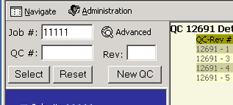
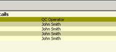
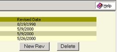
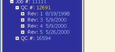
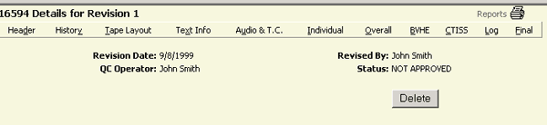
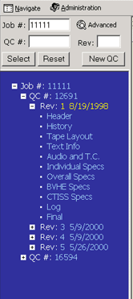

Clicking on the QC# (yellow type) in the Tree Frame (blue frame) will display a list of revisions with various details about those revisions. From here you can ADD or DELETE revisions (example 1).
|  |  |  |
|  |
You can click on the QC-Rev# under the QC Details in the right frame and bring up the details for that particular Revision. It will include the QC operator's name, Revision Date, Status and who it was revised by. You can go to the reports screens from the Revision screen as well. As you can see in example 1A you choose other reports by clicking on the menubar on the name of the report you want.

1A. Revision screen
You can also bring up screen 1A by clicking on the Revision Number in the Tree Frame (blue area).
|  | 1B. |
|